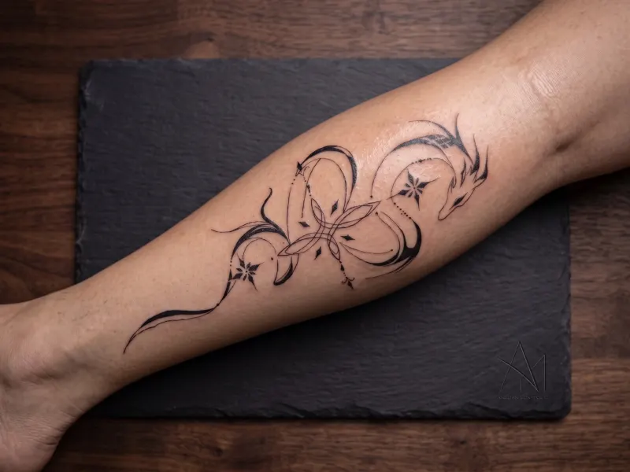
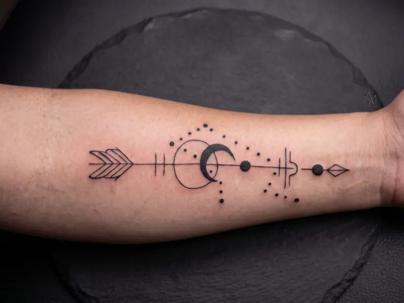
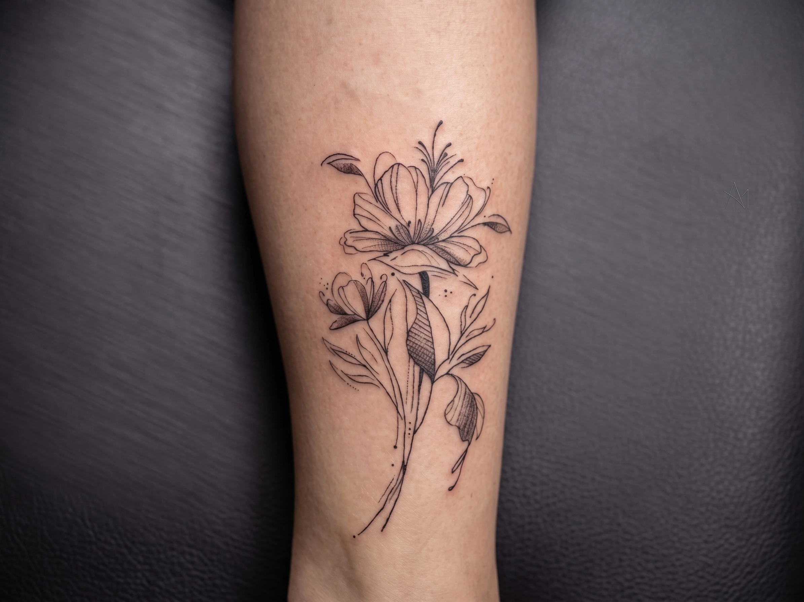

Tatuagem em domicílio · Curitiba
Sou a Francis. Atendo em domicílio, com todo o material esterilizado levado por mim, em um ambiente tranquilo — o seu. Conversamos a ideia com calma antes de qualquer agulha tocar a pele.
Em domicílio
Você não sai de casa. Eu levo maca, materiais e tudo o mais.
Material esterilizado
Agulhas e insumos descartáveis, abertos na sua frente.
Orçamento antes
Valor fechado no WhatsApp, sem surpresa no dia.
Curitiba e região
Combinamos o deslocamento conforme o seu bairro.
Portfólio
Traços finos, folhagens e preto fechado. Peças de cobertura também — mande a foto da tatuagem antiga e vemos o que dá.



Estilos
01
Traço fino e contínuo, sem sombra pesada. Bom para peças pequenas, escritas e desenhos delicados que envelhecem com discrição.
02
Preto sólido e formas cheias. Contraste forte que se mantém legível anos depois, em peças médias e grandes.
03
Folhas, ramos e flores desenhados para acompanhar a curva do corpo. Pode vir em fineline ou com preenchimento.
04
Cobertura de tatuagens antigas. Mande uma foto com boa luz e eu digo com sinceridade o que é possível fazer.
Sobre
Tatuo em Curitiba e trabalho em domicílio porque acredito que a primeira tatuagem — e a décima — fica melhor quando a pessoa está confortável. Levo todo o material esterilizado, monto o espaço, tatuo e deixo tudo como estava.
Antes de agendar, conversamos: a ideia, o lugar do corpo, o tamanho e o que faz sentido para a sua pele. Sem pressa e sem pressão para fechar no mesmo dia.
Cuidados pós-tatuagem
Nas primeiras horas
Mantenha o filme ou a bandagem pelo tempo que eu indicar. Ao retirar, lave com água corrente e sabonete neutro, sem esfregar.
Nos primeiros dias
Uma camada fina de pomada, duas a três vezes por dia. Nada de coçar ou puxar casquinha — ela sai sozinha e leva tinta se for forçada.
Nas primeiras semanas
Sem sol direto, piscina, mar, sauna e academia pesada. Depois de cicatrizado, protetor solar é o que mantém o traço firme.
Qualquer dúvida
Me manda mensagem, mesmo depois do atendimento. Vermelhidão forte, calor ou dor crescente merecem uma foto no WhatsApp.
Agenda
Preencha o que souber e o botão abre o WhatsApp com a mensagem já escrita. Respondo com o orçamento e as datas disponíveis.
WhatsApp 41 99612-2540
Atendimento em domicílio · Curitiba e região